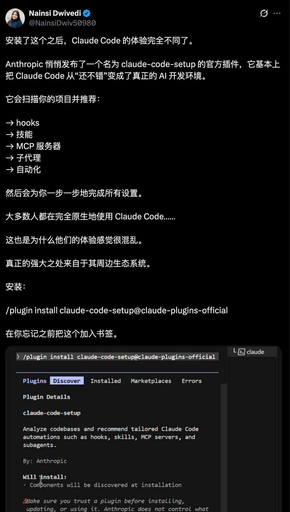
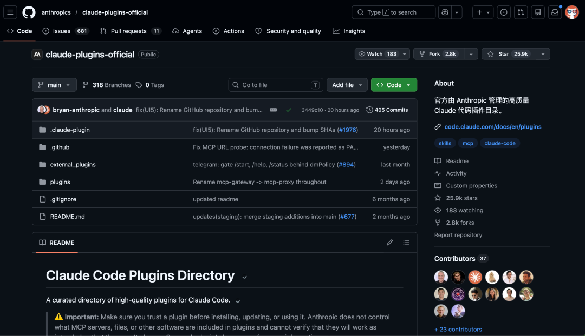
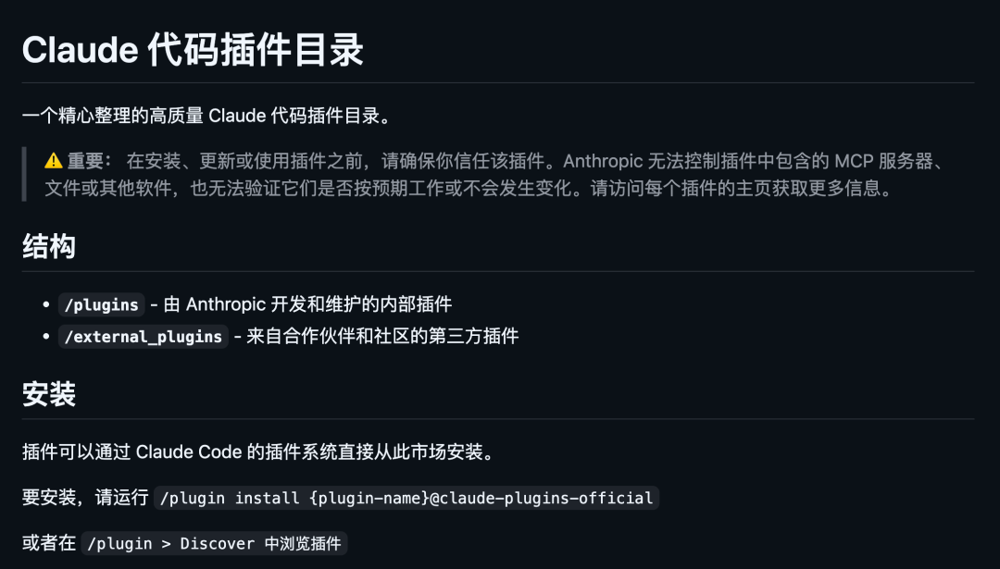
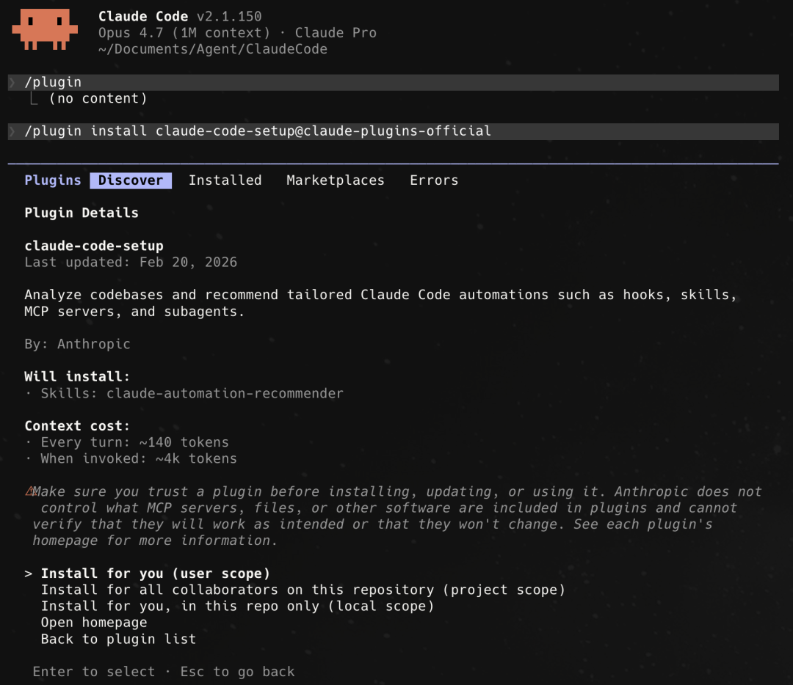
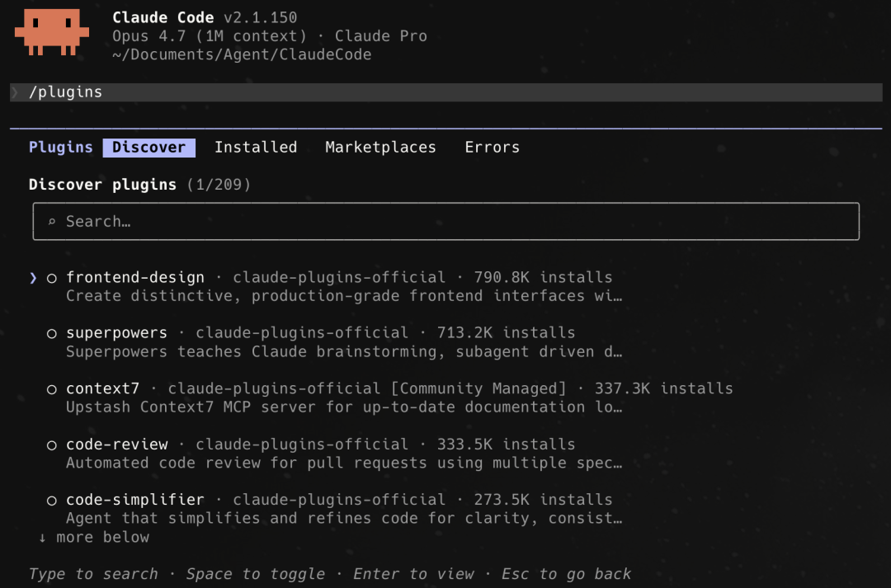
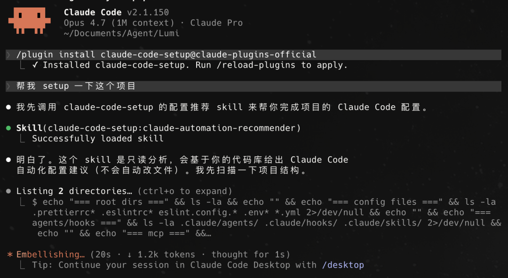
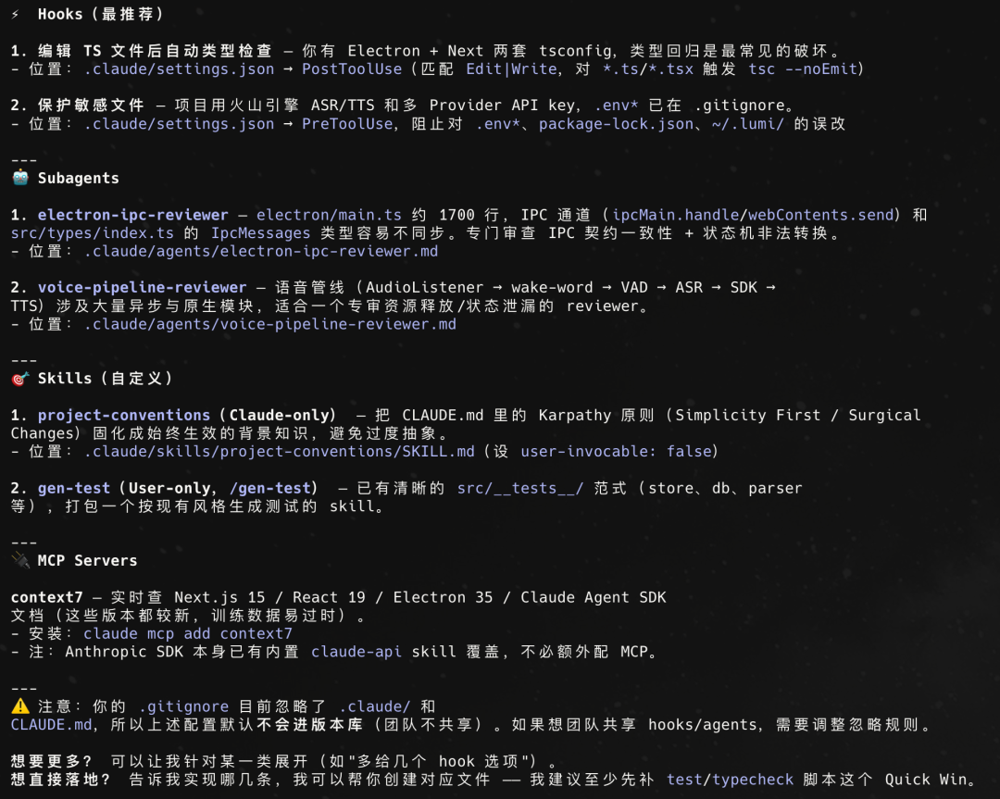
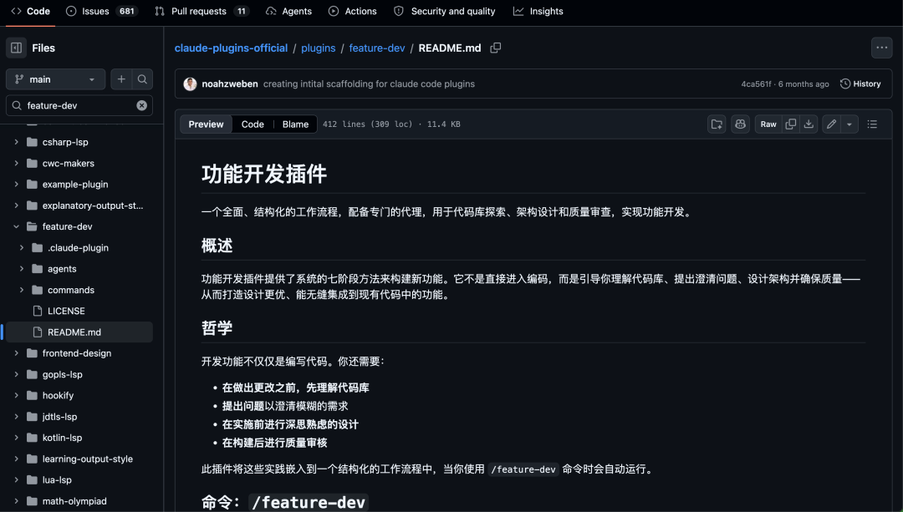
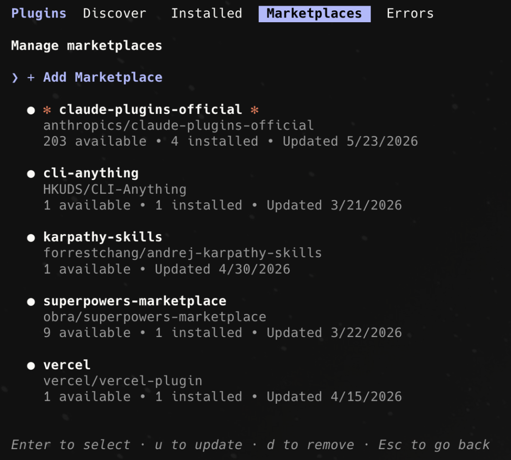
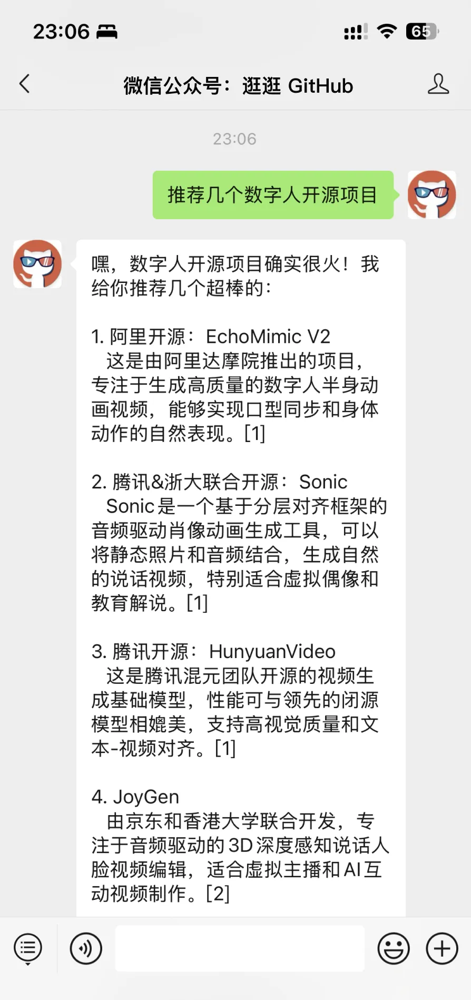

最近刷 X 的时候，发现一条推文被疯狂转发：
Anthropic 悄悄发布了一个官方插件，叫 claude-code-setup，装上后你的 Claude Code 的体验会完全不一样。

然后顺藤摸瓜，发现 Anthropic 其实已经把整个官方插件开源在 GitHub 上了，叫 claude-plugins-official。
现在都 2 万多 Star 了，今天就来聊聊这个开源项目。

01
开源项目简介
claude-plugins-official 是 Anthropic 官方在 GitHub 上维护的 Claude Code 插件目录。
这是一个官方认证的插件市场。
你装了 Claude Code 之后，可以一键从这里面安装各种插件，给你的 Claude Code 加各种能力。
目前仓库里有 30 多个内部插件和 10 多个外部插件，包含了 Code Review、功能开发、遗留代码迁移、Hook 管理、多语言 LSP 支持等场景。

每个插件可以包含：
斜杠命令，快速触发某个工作流 专门的子智能体，干特定的事情 Skills 文件，教 Claude 怎么做某类任务 Hooks，自动触发的钩子，比如保存时自动格式化 MCP Servers，外部工具集成

插件安装只需要一行命令：
/plugin install {插件名}@claude-plugins-official或者直接在 Claude Code 里输入 /plugin，进图形化界面浏览安装。

开源地址：https://github.com/anthropics/claude-plugins-official02
必装插件推荐
仓库里插件不少，但不是每个都适合所有人。挑几个我觉得最值得装的聊聊。
claude-code-setup
这个就是在 X 上被疯狂安利的那个插件。
它的作用很简单但很实用，扫描你的代码库，然后推荐最适合你项目的自动化配置。
你只需要对 Claude 说一句：
帮我 set up 一下当前这个项目
它就会分析你的项目结构、技术栈、依赖关系，然后告诉你：

关键是这个插件是只读的，它只分析不修改，不会动你的任何文件。
除非你授权他去修改。
安装命令：
/plugin install claude-code-setup@claude-plugins-officialfeature-dev
这个插件是我个人觉得也挺惊艳的，日常开发一直在用这个。
它把功能开发变成了一套 7 阶段的结构化流程：发现需求 → 探索代码库 → 澄清问题 → 架构设计 → 编码实现 → 质量审查 → 总结。
这个插件强制你在写代码之前，先把需求搞清楚、把代码库摸透、把架构想明白。
特别是第 4 阶段，它会同时启动 2-3 个架构师 Agent，分别从最小改动、干净架构、务实平衡三个角度设计方案，然后给你对比推荐。
第 6 阶段的质量审查也很硬核，3 个独立的审查 Agent 并行跑：一个看代码质量，一个找 Bug，一个检查是否符合项目规范。

安装命令：
/plugin install feature-dev@claude-plugins-official使用方式：
/feature-dev 基于 OAuth 增加用户授权流程hookify
这个插件解决了一个痛点：Claude Code 的 Hooks 功能很强大，但配置 hooks.json 文件太繁琐。
hookify 让你用自然语言描述规则就行了：
/hookify 当我执行 rm -rf 命令的时候警告我它会自动帮你生成对应的 markdown 配置文件，立即生效，不用重启。
支持的动作类型也全：
bash：监控终端命令 file：监控文件编辑 stop：在 Claude 想要停止时触发 prompt：在用户提交 prompt 时触发
可以设置 warn 警告但允许 或 block 直接拦截。
比如防止误删文件、阻止在 TypeScript 文件里写 console.log、要求提交前必须跑测试，这些场景都能覆盖。
安装命令：
/plugin install hookify@claude-plugins-officialcode-modernization
这个插件专门做遗留代码现代化。
如果你的项目里有老旧的 COBOL、遗留 Java/C++、单体 Web 应用，这个插件能帮你把它们迁移到现代技术栈，同时保证行为不变。
它有一套很严谨的流程：
/modernize-assess billing # 评估遗留代码/modernize-map billing # 构建依赖拓扑图/modernize-extract-rules billing # 提取业务规则/modernize-brief billing java-spring # 生成迁移方案/modernize-transform billing interest-calc java-spring # 逐模块迁移/modernize-reimagine billing "event-driven services" # 从业务规则推倒重建/modernize-harden billing # 安全加固遗留系统
整个过程不会直接改你的遗留代码，所有改动都输出到 modernized/ 目录，你自己决定什么时候用。
03
如何使用
整套流程很简单：
第一步，确保你已经安装了 Claude Code。
第二步，在 Claude Code 里输入：
/plugin进入插件管理界面，可以直接浏览和安装所有官方插件。

或者用命令行直接安装指定插件：
/plugin install claude-code-setup@claude-plugins-official/plugin install feature-dev@claude-plugins-official/plugin install hookify@claude-plugins-official
第三步，安装完就能用了。
每个插件都有自己的命令或者触发方式，看各插件的 README 就行。
如果你是第一次用，建议先装 claude-code-setup，让它帮你一键分析项目，推荐最适合你的插件组合。
门槛太低了。
04
点击下方卡片，关注逛逛 GitHub
这个公众号历史发布过很多有趣的开源项目，如果你懒得翻文章一个个找，你直接关注微信公众号：逛逛 GitHub ，后台对话聊天就行了：
